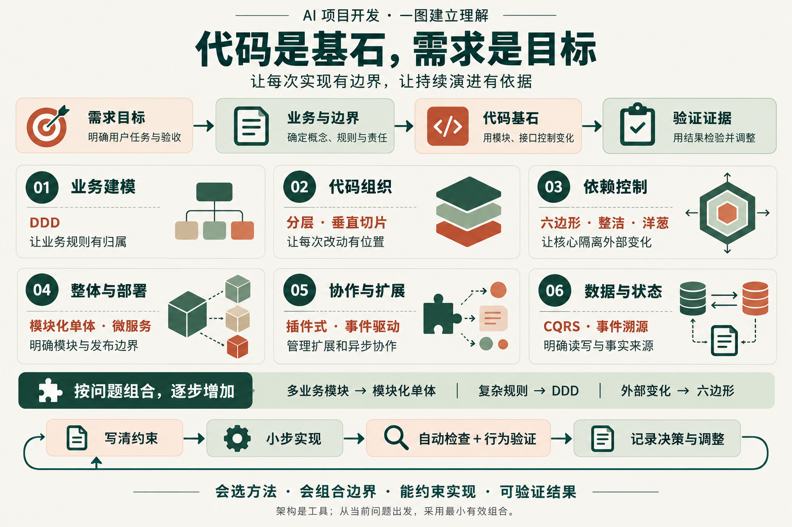

先找实际压力
业务规则复杂、外部服务变化、读写差异或部署压力，分别需要不同方法。

01 / 我们真正要掌握的能力
业务规则复杂、外部服务变化、读写差异或部署压力，分别需要不同方法。
明确谁负责规则、哪些操作一起成功、哪份数据是事实来源。
确定模块公开入口、依赖方向、规则所有者，并接入可执行检查。
检查关键行为和失败路径，记录已验证范围，按新证据调整结构。
02 / 六类问题，十二种方法
这些方法处在不同层次；同层的相近方法可以择一表达，不同层的方法可以组合。点击名称进入手册对应条目。
统一业务语言，划清上下文与模型边界。优先用于规则复杂、概念容易混淆的领域。
分层让技术职责清楚；垂直切片让一个用例的改动集中。根据变化方式选择组织方式。
通过接口与依赖方向保护核心规则，让模型服务、数据库或界面变化有明确落点。
先厘清责任与数据归属；存在独立发布或扩容需求时，再评估拆分服务及运维成本。
插件式统一扩展契约；事件驱动用发生的事实衔接后续处理，并承担重试与一致性设计。
CQRS 分开读写模型；事件溯源以事件历史作为状态来源。两者分别判断采用理由与代价。
重要数据首先需要完整性、保存、兼容与恢复验证；它本身不会自动要求微服务或事件溯源。
03 / 一个有条件的起步组合
假设一个有多个业务能力的 AI 应用：整体用模块化单体明确责任；复杂规则所在的模块用 DDD 建模；模型、存储等外部服务通过端口与适配器接入。简单用例保留直接清楚的实现。
组合之后，继续写清规则所有者、共同成功的边界和权威数据。用一次真实需求验证改动能否集中、规则是否保持一致。
根据自己的项目压力选组合 →04 / 持续把控每一次 AI 实现
说明要实现什么、必须保持什么、什么失败不能接受。
定位规则所有者、公开入口、允许依赖与本次改动范围。
运行结构检查、行为测试和必要集成验证，记录实际结果。
遇到规则重复、改动扩散或真实压力变化，更新决策与约束。
留下四种可继承的材料：架构说明保存当前结构，ADR 保存重要取舍，项目指令规定 AI 工作方式，检查与 CI 执行可自动判断的规则。
文字指令无法保证 AI 永远遵守架构。检查覆盖能判断的约束；业务模型与重要取舍仍需结合真实场景审查。